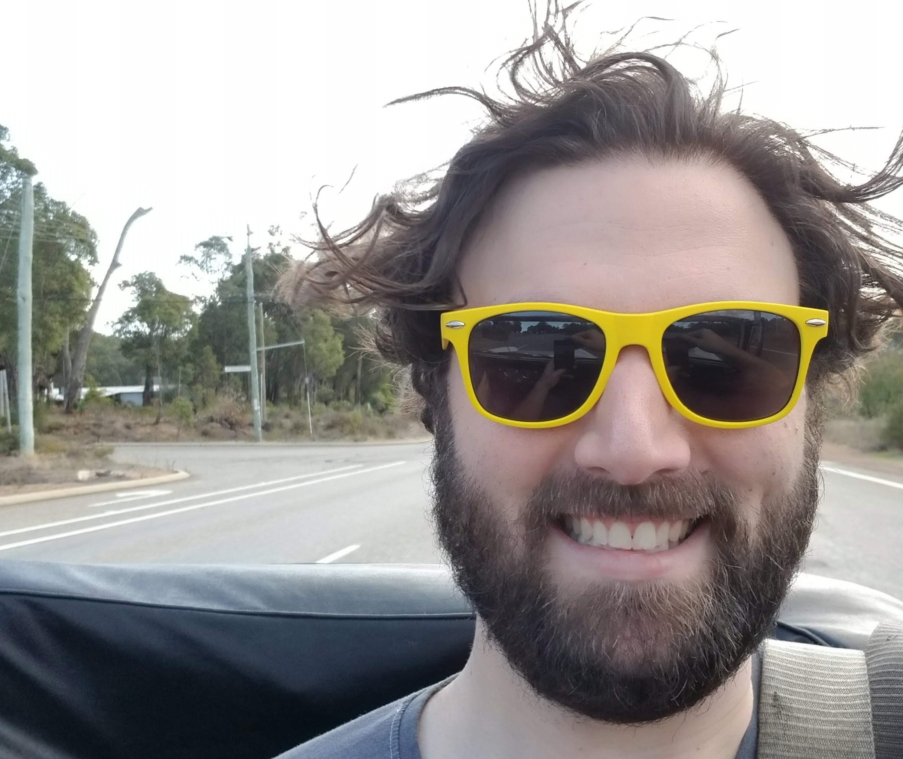

About Me

I've been passionate about technology from a young age. Building computers from scratch with parts salvaged from whatever I could get my hands on. After a brief foray into the world of artisinal pizza making I managed to get myself a job working on a 1st level support team for a national chain of Hospitals.
After 3 years working in the support team I migrated to an application support role, managing the Learning Development system for the organisation. While it was an interesting job the scope quickly changed and it reached a point where I was no longer happy with the work I was doing. I decided to move on and found a role in Local Government working in Technical support again.
2 years later, on a whim, I entered into the nationally televised baking show, "The Great Australian Bake Off", and managed to secure an audition. This was lucky because when I was attending the audition in Sydney I met a young woman by the name of Alexandra. I ended up staying in contact with her and after I made it onto the show and finished my run we began a relationship.
Two and a half years after that I've now moved cities, gotten engaged and managed to work my way up to an upper level support role at the University of Melbourne. Looking for a new challenge I decided to enrol myself into a Coding Bootcamp offered by Monash university. Hopefully it will lead to my next great adventure.